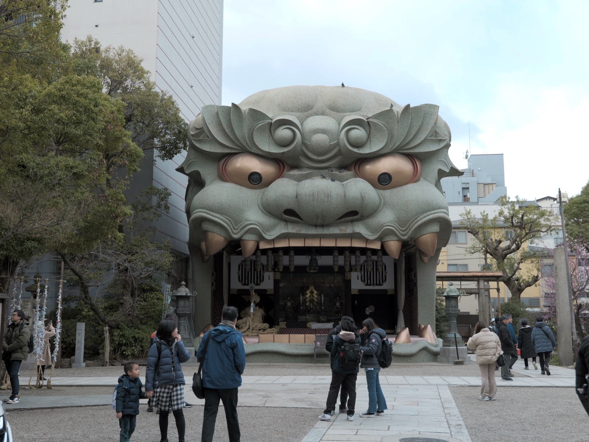

Modern dual-branded hotel in the heart of Namba — 5-minute walk to Dotonbori and Shinsaibashi. Rooms have kitchenettes ideal for storing GF snacks and leftovers.
100% dedicated GF bakery using Japanese rice flour. Celiac-safe dedicated kitchen. Small space (~8 seats), expect waits at peak times.
What to Order
GF egg salad sandwich, lunch box sets with sandwich, salad and scone, mont blanc cake. Was so jealous seeing 7-11 egg salad sandwiches — got a GF one here that totally made up for it!
100% dedicated vegan and GF cafe/bakery in a renovated akiya. Dedicated kitchen, English-speaking owners (Scott and Erika) knowledgeable about cross-contamination.
100% vegan and GF restaurant. GF okonomiyaki cooked on separate grill, served in single-use trays. Full ingredient list on every menu item. 8 private dining rooms.
What to Order
Okonomiyaki, kushikatsu, takoyaki, temakizushi, karaage, gyoza, ramen — all GF! English menus available.
Location
Umeda, Osaka
OKOTAKO
100% GF
GF Takoyaki · Vegan
Traveler recommended
GF Score
Safety Notes
100% vegan and GF. Run by Shiho (same owner as OKO Okonomiyaki). Dedicated GF fryer confirmed by many reviewers. Celiac-safe.
What to Order
Takoyaki made with soy flour (no octopus, fully vegan). Dumplings, tempura, fries. GF beer ¥200 self-serve.
Vegan restaurant — many dishes are naturally GF but not a dedicated GF facility. Confirm GF status of specific dishes with staff.
What to Order
Vegan bento boxes. Check Shinsekai location for all-natural menu.
Location
Shinmachi / Shinsekai, Osaka
Optimus cafe
GF Options
Vegan Cafe
Traveler recommended
GF Score
Safety Notes
Vegan cafe with some GF options but some items marked GF contain oats. Kitchen cannot guarantee no cross-contamination. Better for GF-by-choice than celiac.
What to Order
GF bread, smoothies, muffins, brownies. Riverside location near Kitahama.
NOT celiac-safe. Organic restaurant with some GF-marked items but significant cross-contamination. One reviewer found only salad was truly GF due to soy sauce and shared cooking oils.
What to Order
Ask carefully about allergies. Located on 3F of Hanshin Department Store, Umeda.
Osaka Metro — 9 lines, frequent service. Midosuji Line connects Umeda, Namba, and Tennoji. Trains run 5am to midnight.
Every 2–5 min at peak
IC Card
Buy ICOCA at any station (¥2,000). Works on all trains, buses, convenience stores, and vending machines. Interchangeable with Suica.
Tap and go everywhere
Walking
Dotonbori, Shinsaibashi, and Shinsekai are very walkable. Osaka Bike Share available citywide with docking stations.
Most sights on foot
Airport
Nankai Rapi:t to Namba (34 min, ¥1,490). JR Haruka to Osaka Station (47 min, ¥2,710).
From Kansai Airport (KIX)
Pro Tip
Get the Osaka Amazing Pass (¥4,300/day) for unlimited metro/bus rides plus free entry to 40+ attractions including Osaka Castle and Dotonbori River Cruise.
Landmarks & Must-See Spots
2 spots
Namba Yasaka Jinja
Historic
Shinto shrine famous for its dramatic lion-head stage — the huge lion head is meant to swallow up all the evil spirits and bring good luck.
Namba, Osaka
Traveler recommended

Osaka Castle
Historic
Iconic 16th-century castle with museum inside and sweeping views from the top floor. Surrounding park is free to explore with moats, gardens, and cherry blossoms in spring.
Chuo Ward, Osaka
Traveler recommended
Neighborhoods
Dotonbori / Namba
Nightlife · Street Food
The pulsating heart of Osaka. Famous for the giant Glico Running Man sign, enormous illuminated restaurant billboards, and the canal-side promenade. Packed with takoyaki stands, restaurants, and entertainment.
Shinsaibashi / Amerikamura
Shopping · Youth Culture
Osaka’s premier shopping district. Shinsaibashi-suji is a 600m covered arcade. Amerikamura (America Village) is the nexus of streetwear, vintage shops, and street art since the 1970s.
Shinsekai
Retro · Kushikatsu
Retro entertainment district centered on the iconic Tsutenkaku Tower. Crammed with hole-in-the-wall eateries and the birthplace of kushikatsu. Grittier and more “old Osaka” than Dotonbori.
Umeda / Kita
Business · Department Stores
Northern commercial center around Osaka/Umeda stations. High-end department stores (Hankyu, Hanshin), sprawling underground malls, and the Umeda Sky Building’s Floating Garden Observatory.
Tennoji
Temples · Modern
Southern district with Abeno Harukas (Japan’s tallest building), the historic Shitennoji Temple (founded 593 AD), and easy access to Shinsekai next door. Quieter and more residential.
Things to Do
Experiences & Attractions
Cup Noodles Museum Osaka Ikeda
Paid
The birthplace of instant ramen. Create your own custom Cup Noodles at the My Cup Noodles Factory — choose your soup base and 4 toppings. Museum exhibits are free.
Iconic castle with museum covering Osaka’s history and Toyotomi Hideyoshi. Park grounds are free; castle tower admission required for the museum and observation deck.
Extended hours during cherry blossom season ¥1,200
Check the full guide for grocery recommendations and naturally gluten-free local dishes in Osaka, Japan.
Travel Tips
Frame your restriction as a wheat allergy (小麦アレルギー), not a lifestyle choice — allergies are well-understood and respected in Japanese food culture.
Ask your hotel concierge to call restaurants in advance to explain your dietary needs. Japanese hospitality means restaurants will go to great lengths to accommodate with notice.
Conveyor belt sushi (kaiten-zushi) works well — stick to plain nigiri and bring your own tamari. Chains like Kura Sushi have allergen info on touch screens.
Look for 小麦 (komugi / wheat) on every label — Japan mandates labeling of 7 major allergens including wheat on all packaged foods.
What I’d Do Differently
Would have visited FOLK茶菓 (folksaka) — a dedicated GF cafe in a renovated old house with English-speaking owners.
Would have packed more tamari packets — ran through them faster than expected between sashimi dinners and yakiniku lunches.
Would have tried both OKO Okonomiyaki and OKOTAKO — they’re run by the same amazing owner, Shiho, and together they cover the full GF Osaka street food experience.
Have a tip or comment?
Found a great GF spot in Osaka? I'd love to hear from you.